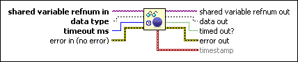

Read Variable with Timeout Function
Owning Palette: PSP Variable VI and Functions
Requires: Base Development System
Reads a new value from a network-published shared variable. Instead of returning the latest data value, which might have been read already, this function performs a blocking read, which means the function does not finish executing until a new value arrives or the timeout you specify expires.
Use this function to avoid reading data values that you already have read. If you need to read the current value regardless of whether the value changes, use the Read Variable function.

 Add to the block diagram Add to the block diagram |
 Find on the palette Find on the palette |